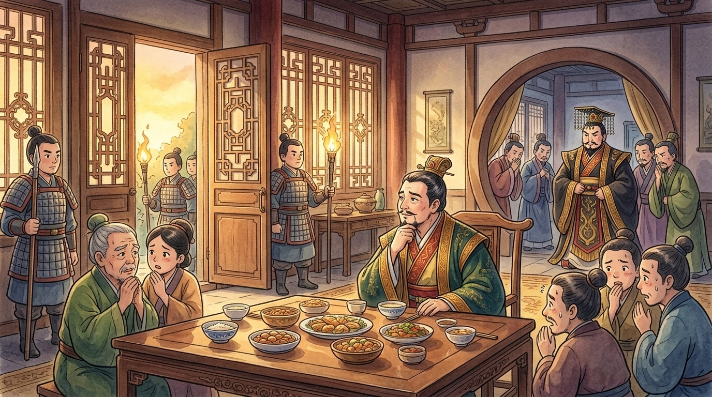
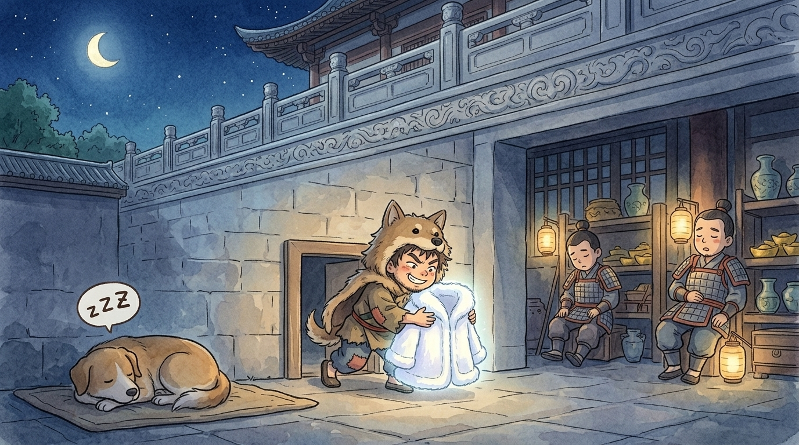
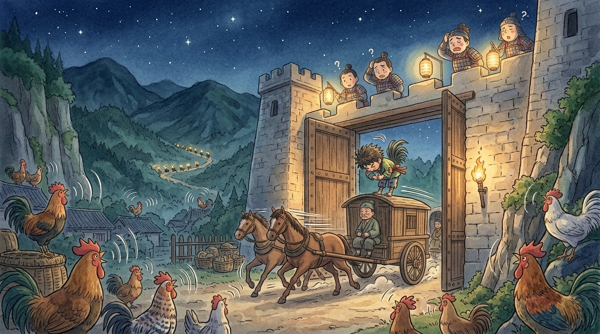

Ahem. Creak. Allow me to introduce myself, little traveller. I am the great gate of Hangu Pass (函谷關) — the mighty wooden door in the mountain wall between the kingdom of Qin (秦) and everywhere else. Armies knock on me. Kings wait for me. And my rule is simple and famous: I stay shut all night, and I open at the first rooster crow of dawn. That rule never bends. Except once, on the strangest midnight (半夜) of my long wooden life — and if you'll oil my hinges and settle down, I'll tell you exactly how it happened.1
🚪 What the palace doors told me
You should know that we doors talk. The palace doors of Qin are my little cousins, and doors hear everything. So I knew the whole story before the travellers ever reached me.
It began when Lord Mengchang (孟嘗君) of Qi (齊) came to visit Qin. You may have met this gentleman in another story on this shelf — the famous lord who kept three thousand guests at his table. Scholars, swordsmen, fortune-tellers, jugglers… he welcomed anyone with a talent (本領), even a talent nobody could imagine ever needing. His friends teased him for it. "Three thousand mouths," they said, "and maybe thirty useful ones."
The King of Qin (秦昭王) had heard so much about this lord that he invited him to visit — and, upon meeting him, immediately offered to make him chief minister of Qin. Now, my cousins tell me the king's advisers went pale. They whispered: "Sire, he is a lord of Qi. His heart will always beat for Qi first. If he learns all our secrets and returns home, Qin is in danger." The king listened, chewed his beard, and changed his mind entirely. And a king who fears a guest does not simply wave goodbye to him.2
Lord Mengchang was placed under guard in his residence, very politely, with excellent food and absolutely no permission to leave. An invitation had become a cage. The king's plan, the doors whispered, was darker still: keep him… or make sure he could never advise any kingdom again.

🚪 The coat problem
There was one person the king listened to above all his advisers: his favourite lady of the palace (寵妃). Lord Mengchang's people sent her a desperate message: put in a kind word for us, and name your price.
She named it instantly. "I want the white fox-fur coat (白狐裘)."
Ah, the coat. My cousins sighed through their keyholes about that coat — sewn from the pure white underarm fur of a hundred foxes, glowing like moonlight on snow, worth more than a city. There was exactly one problem. Lord Mengchang had brought exactly one such coat to Qin… and he had already given it to the king as a greeting gift. It now lay folded in the royal treasury, behind walls, bars, bolts and guards (守衛).
In the locked residence, Lord Mengchang looked around at his travelling guests and asked, without much hope: "Can anyone here get the coat back?"
And from the back row a small, quiet man raised his hand — a man the clever guests always laughed at, because his one and only talent was this: he could dress in dog fur and crawl through dog doors to steal things, silent as a shadow. A thief (小偷), to put it plainly. "My lord," he said, "I can."
That night he slipped into the treasury the way a cat slips through a fence — in through the dog door, past the sleeping guards, out with the moon-white coat, and not one floorboard creaked (my cousins swear they helped). The coat reached the palace lady before sunrise. She was delighted. She purred one sentence into the king's ear that evening: "Such a famous lord, held like a prisoner — won't the whole world say Qin fears one man?" The king, embarrassed, waved his hand: "Oh, let him go home."3

🚪 Midnight at my doorstep
Now — at last — the story arrives at ME.
Lord Mengchang was free, but he was no fool. He knew exactly how long a changeable king stays changed. His party fled east that very hour, horses foaming, wheels bouncing, racing for the one and only exit from Qin: my humble, enormous self. They reached me at midnight (半夜).
And I was, of course, shut.
Rules are rules, little traveller. The gate of Hangu Pass opens at the first rooster crow, and roosters crow at dawn. Dawn was hours away. And somewhere far behind, my old planks could already feel it — the drumming of pursuing hooves. The king had indeed changed his mind again; his riders were coming to drag Lord Mengchang back. The travellers stared at my bolted timbers in despair. I felt terrible. I also felt bolted. A gate cannot break its own rule.
Then a scruffy man stepped out of the crowd of guests — a fellow whose one and only talent was considered even MORE useless than the dog thief's. He cleared his throat. He flapped his elbows. And he let out a rooster crow so perfect, so proud, so gloriously loud, that I creaked in astonishment.
One heartbeat of silence. Then, from a farmyard near the pass: a sleepy answering crow. Then another. Then EVERY rooster for a mile around burst into song, each one furious that some other rooster had dared to greet the dawn first. It was midnight, and the whole valley was crowing.4
My gatekeepers tumbled out of bed. Rules are rules: rooster crow means open the gate. They checked the sky — dark, but who argues with three hundred roosters? The bolts slid. My hinges swung. I opened, for the first and only time in my life, in the middle of the night — and Lord Mengchang's carriages rattled through me and away into the eastern dark, toward home and freedom (自由).
When the king's riders came pounding up at dawn, I was shut again, looking extremely innocent. Long gone, gentlemen. Do mind the door.

🚪 What an old door knows
Back home in Qi, the story spread, and people invented a phrase for it: 雞鳴狗盜 — "crowing like a rooster, thieving like a dog." The clever guests who had laughed hardest were now rather quiet. Their poetry had opened no doors that night. A dog door and a birdcall had saved every life in the party.5
Some snobby scholars still use 雞鳴狗盜 to sneer at "small, low tricks." But Lord Mengchang never sneered again, and neither do I — because I remember whose talent it was that moved ME, the heaviest door in China, when swords and titles and fine speeches could not.
So here is the wisdom of a ten-thousand-year-old gate, little traveller: never laugh at a "useless" skill — yours or anyone else's. The classmate who does funny voices, the friend who can fold anything out of paper, the kid who knows every bus route in Hong Kong… no one can say which talent, on which surprising midnight, will be the exact key that opens the door. Collect people kindly, the way Lord Mengchang did. And keep your hinges oiled. Creak. 🚪